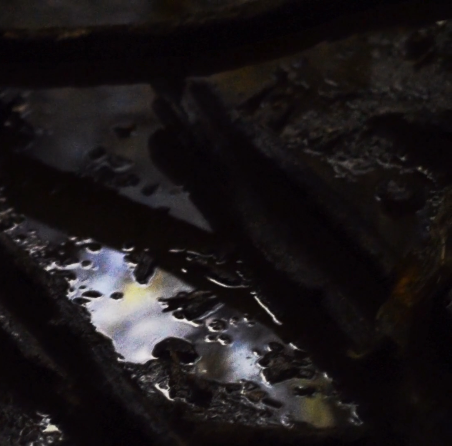

New Leaf
Tamrias is a classically-trained
electro-acoustic musician and producer
currently based in Cape Town,
South Africa.
Her debut album, titled 'New Leaf' is a deep,
reflective expedition into the unknown.
Swirling, cinematic sound-design techniques
and cut-up glitch-esque electronics swim amidst
colourful composition, with sampled loops and
naturally occurring soundscapes.
Listen on bandcamp
Released January 18, 2018
Mastered by Levi Thole

The Cave
"The first time working with Tamrias,
we found some really cool beads in the studio
and tried sampling them and found we could make a really
creepy sounding background which reminded us both a lot of a cave.
From there she put down an impromptu piano part
and we had a friend come in and record some melodic lines
and extended techniques on viola.
I did most of the processing and sound design to bring our cave to life."
- Angus Teeton
Watch on Vimeo
Listen on SoundCloud